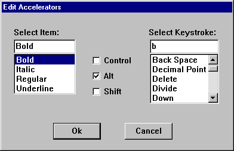

title: Using Keyboard Accelerators description: This section covers tasks that are associated with keyboard accelerators. ms.assetid: 11c42d69-7454-43e6-9f44-c14a283814ce keywords:
This section covers tasks that are associated with keyboard accelerators.
The most common way to add accelerator support to an application is to include an accelerator-table resource with the application's executable file and then load the resource at run time.
This section covers the following topics.
You create an accelerator-table resource by using the ACCELERATORS statement in your application's resource-definition file. You must assign a name or resource identifier to the accelerator table, preferably unlike that of any other resource. The system uses this identifier to load the resource at run time.
Each accelerator you define requires a separate entry in the accelerator table. In each entry, you define the keystroke (either an ASCII character code or virtual-key code) that generates the accelerator and the accelerator's identifier. You must also specify whether the keystroke must be used in some combination with the ALT, SHIFT, or CTRL keys. For more information about virtual keys, see Keyboard Input.
An ASCII keystroke is specified either by enclosing the ASCII character in double quotation marks or by using the integer value of the character in combination with the ASCII flag. The following examples show how to define ASCII accelerators.
"A", ID_ACCEL1 ; SHIFT+A
65, ID_ACCEL2, ASCII ; SHIFT+A
A virtual-key code keystroke is specified differently depending on whether the keystroke is an alphanumeric key or a non-alphanumeric key. For an alphanumeric key, the key's letter or number, enclosed in double quotation marks, is combined with the VIRTKEY flag. For a non-alphanumeric key, the virtual-key code for the specific key is combined with the VIRTKEY flag. The following examples show how to define virtual-key code accelerators.
"a", ID_ACCEL3, VIRTKEY ; A (caps-lock on) or a
VK_INSERT, ID_ACCEL4, VIRTKEY ; INSERT key
The following example shows an accelerator-table resource that defines accelerators for file operations. The name of the resource is FileAccel.
FileAccel ACCELERATORS
BEGIN
VK_F12, IDM_OPEN, CONTROL, VIRTKEY ; CTRL+F12
VK_F4, IDM_CLOSE, ALT, VIRTKEY ; ALT+F4
VK_F12, IDM_SAVE, SHIFT, VIRTKEY ; SHIFT+F12
VK_F12, IDM_SAVEAS, VIRTKEY ; F12
END
If you want the user to press the ALT, SHIFT, or CTRL keys in some combination with the accelerator keystroke, specify the ALT, SHIFT, and CONTROL flags in the accelerator's definition. Following are some examples.
"B", ID_ACCEL5, ALT ; ALT_SHIFT+B
"I", ID_ACCEL6, CONTROL, VIRTKEY ; CTRL+I
VK_F5, ID_ACCEL7, CONTROL, ALT, VIRTKEY ; CTRL+ALT+F5
By default, when an accelerator key corresponds to a menu item, the system highlights the menu item. You can use the NOINVERT flag to prevent highlighting for an individual accelerator. The following example shows how to use the NOINVERT flag:
VK_DELETE, ID_ACCEL8, VIRTKEY, SHIFT, NOINVERT ; SHIFT+DELETE
To define accelerators that correspond to menu items in your application, include the accelerators in the text of the menu items. The following example shows how to include accelerators in menu-item text in a resource-definition file.
FilePopup MENU
BEGIN
POPUP "&File"
BEGIN
MENUITEM "&New..", IDM_NEW
MENUITEM "&Open\tCtrl+F12", IDM_OPEN
MENUITEM "&Close\tAlt+F4" IDM_CLOSE
MENUITEM "&Save\tShift+F12", IDM_SAVE
MENUITEM "Save &As...\tF12", IDM_SAVEAS
END
END
An application loads an accelerator-table resource by calling the LoadAccelerators function and specifying the instance handle to the application whose executable file contains the resource and the name or identifier of the resource. LoadAccelerators loads the specified accelerator table into memory and returns the handle to the accelerator table.
An application can load an accelerator-table resource at any time. Usually, a single-threaded application loads its accelerator table before entering its main message loop. An application that uses multiple threads typically loads the accelerator-table resource for a thread before entering the message loop for the thread. An application or thread might also use multiple accelerator tables, each associated with a particular window in the application. Such an application would load the accelerator table for the window each time the user activated the window. For more information about threads, see Processes and Threads.
To process accelerators, an application's (or thread's) message loop must contain a call to the TranslateAccelerator function. TranslateAccelerator compares keystrokes to an accelerator table and, if it finds a match, translates the keystrokes into a WM_COMMAND (or WM_SYSCOMMAND) message. The function then sends the message to a window procedure. The parameters of the TranslateAccelerator function include the handle to the window that is to receive the WM_COMMAND messages, the handle to the accelerator table used to translate accelerators, and a pointer to an MSG structure containing a message from the queue. The following example shows how to call TranslateAccelerator from within a message loop.
MSG msg;
BOOL bRet;
while ( (bRet = GetMessage(&msg, (HWND) NULL, 0, 0)) != 0)
{
if (bRet == -1)
{
// handle the error and possibly exit
}
else
{
// Check for accelerator keystrokes.
if (!TranslateAccelerator(
hwndMain, // handle to receiving window
haccel, // handle to active accelerator table
&msg)) // message data
{
TranslateMessage(&msg);
DispatchMessage(&msg);
}
}
}
When an accelerator is used, the window specified in the TranslateAccelerator function receives a WM_COMMAND or WM_SYSCOMMAND message. The low-order word of the wParam parameter contains the identifier of the accelerator. The window procedure examines the identifier to determine the source of the WM_COMMAND message and process the message accordingly.
Typically, if an accelerator corresponds to a menu item in the application, the accelerator and menu item are assigned the same identifier. If you need to know whether a WM_COMMAND message was generated by an accelerator or by a menu item, you can examine the high-order word of the wParam parameter. If an accelerator generated the message, the high-order word is 1; if a menu item generated the message, the high-order word is 0.
The system automatically destroys accelerator-table resources loaded by the LoadAccelerators function, removing the resource from memory after the application closes.
The example in this section shows how to perform the following tasks:
These tasks are demonstrated in the context of an application that includes a Character menu and corresponding accelerators that allow the user to select attributes of the current font.
The following portion of a resource-definition file defines the Character menu and the associated accelerator table. Note that the menu items show the accelerator keystrokes and that each accelerator has the same identifier as its associated menu item.
#include <windows.h>
#include "acc.h"
MainMenu MENU
{
POPUP "&Character"
{
MENUITEM "&Regular\tF5", IDM_REGULAR
MENUITEM "&Bold\tCtrl+B", IDM_BOLD
MENUITEM "&Italic\tCtrl+I", IDM_ITALIC
MENUITEM "&Underline\tCtrl+U", IDM_ULINE
}
}
FontAccel ACCELERATORS
{
VK_F5, IDM_REGULAR, VIRTKEY
"B", IDM_BOLD, CONTROL, VIRTKEY
"I", IDM_ITALIC, CONTROL, VIRTKEY
"U", IDM_ULINE, CONTROL, VIRTKEY
}
The following sections from the application's source file show how to implement the accelerators.
HWND hwndMain; // handle to main window
HANDLE hinstAcc; // handle to application instance
int WINAPI WinMain(HINSTANCE hinst, HINSTANCE hinstPrev, LPSTR lpCmdLine, int nCmdShow)
{
MSG msg; // application messages
BOOL bRet; // for return value of GetMessage
HACCEL haccel; // handle to accelerator table
// Perform the initialization procedure.
// Create a main window for this application instance.
hwndMain = CreateWindowEx(0L, "MainWindowClass",
"Sample Application", WS_OVERLAPPEDWINDOW, CW_USEDEFAULT,
CW_USEDEFAULT, CW_USEDEFAULT, CW_USEDEFAULT, NULL, NULL,
hinst, NULL );
// If a window cannot be created, return "failure."
if (!hwndMain)
return FALSE;
// Make the window visible and update its client area.
ShowWindow(hwndMain, nCmdShow);
UpdateWindow(hwndMain);
// Load the accelerator table.
haccel = LoadAccelerators(hinstAcc, "FontAccel");
if (haccel == NULL)
HandleAccelErr(ERR_LOADING); // application defined
// Get and dispatch messages until a WM_QUIT message is
// received.
while ((bRet = GetMessage(&msg, NULL, 0, 0)) != 0)
{
if (bRet == -1)
{
// handle the error and possibly exit
}
else
{
// Check for accelerator keystrokes.
if (!TranslateAccelerator(
hwndMain, // handle to receiving window
haccel, // handle to active accelerator table
&msg)) // message data
{
TranslateMessage(&msg);
DispatchMessage(&msg);
}
}
}
return msg.wParam;
}
LRESULT APIENTRY MainWndProc(HWND hwndMain, UINT uMsg, WPARAM wParam, LPARAM lParam)
{
BYTE fbFontAttrib; // array of font-attribute flags
static HMENU hmenu; // handle to main menu
switch (uMsg)
{
case WM_CREATE:
// Add a check mark to the Regular menu item to
// indicate that it is the default.
hmenu = GetMenu(hwndMain);
CheckMenuItem(hmenu, IDM_REGULAR, MF_BYCOMMAND |
MF_CHECKED);
return 0;
case WM_COMMAND:
switch (LOWORD(wParam))
{
// Process the accelerator and menu commands.
case IDM_REGULAR:
case IDM_BOLD:
case IDM_ITALIC:
case IDM_ULINE:
// GetFontAttributes is an application-defined
// function that sets the menu-item check marks
// and returns the user-selected font attributes.
fbFontAttrib = GetFontAttributes(
(BYTE) LOWORD(wParam), hmenu);
// SetFontAttributes is an application-defined
// function that creates a font with the
// user-specified attributes the font with
// the main window's device context.
SetFontAttributes(fbFontAttrib);
break;
default:
break;
}
break;
// Process other messages.
default:
return DefWindowProc(hwndMain, uMsg, wParam, lParam);
}
return NULL;
}
This topic discusses how to use accelerator tables created at run time.
The first step in creating an accelerator table at run time is filling an array of ACCEL structures. Each structure in the array defines an accelerator in the table. An accelerator's definition includes its flags, its key, and its identifier. The ACCEL structure has the following form.
typedef struct tagACCEL { // accl
BYTE fVirt;
WORD key;
WORD cmd;
} ACCEL;
You define an accelerator's keystroke by specifying an ASCII character code or a virtual-key code in the key member of the ACCEL structure. If you specify a virtual-key code, you must first include the FVIRTKEY flag in the fVirt member; otherwise, the system interprets the code as an ASCII character code. You can include the FCONTROL, FALT, or FSHIFT flag, or all three, to combine the CTRL, ALT, or SHIFT key with the keystroke.
To create the accelerator table, pass a pointer to the array of ACCEL structures to the CreateAcceleratorTable function. CreateAcceleratorTable creates the accelerator table and returns the handle to the table.
The process of loading and calling accelerators provided by an accelerator table created at run time is the same as processing those provided by an accelerator-table resource. For more information, see Loading the Accelerator Table Resource through Processing WM_COMMAND Messages.
The system automatically destroys accelerator tables created at run time, removing the resources from memory after the application closes. You can destroy an accelerator table and remove it from memory earlier by passing the table's handle to the DestroyAcceleratorTable function.
This example shows how to construct a dialog box that allows the user to change the accelerator associated with a menu item. The dialog box consists of a combo box containing menu items, a combo box containing the names of keys, and check boxes for selecting the CTRL, ALT, and SHIFT keys. The following illustration shows the dialog box.

The following example shows how the dialog box is defined in the resource-definition file.
EdAccelBox DIALOG 5, 17, 193, 114
STYLE DS_MODALFRAME | WS_POPUP | WS_VISIBLE | WS_CAPTION
CAPTION "Edit Accelerators"
BEGIN
COMBOBOX IDD_MENUITEMS, 10, 22, 52, 53,
CBS_SIMPLE | CBS_SORT | WS_VSCROLL |
WS_TABSTOP
CONTROL "Control", IDD_CNTRL, "Button",
BS_AUTOCHECKBOX | WS_TABSTOP,
76, 35, 40, 10
CONTROL "Alt", IDD_ALT, "Button",
BS_AUTOCHECKBOX | WS_TABSTOP,
76, 48, 40, 10
CONTROL "Shift", IDD_SHIFT, "Button",
BS_AUTOCHECKBOX | WS_TABSTOP,
76, 61, 40, 10
COMBOBOX IDD_KEYSTROKES, 124, 22, 58, 58,
CBS_SIMPLE | CBS_SORT | WS_VSCROLL |
WS_TABSTOP
PUSHBUTTON "Ok", IDOK, 43, 92, 40, 14
PUSHBUTTON "Cancel", IDCANCEL, 103, 92, 40, 14
LTEXT "Select Item:", 101, 10, 12, 43, 8
LTEXT "Select Keystroke:", 102, 123, 12, 60, 8
END
The application's menu bar contains a Character submenu whose items have accelerators associated with them.
MainMenu MENU
{
POPUP "&Character"
{
MENUITEM "&Regular\tF5", IDM_REGULAR
MENUITEM "&Bold\tCtrl+B", IDM_BOLD
MENUITEM "&Italic\tCtrl+I", IDM_ITALIC
MENUITEM "&Underline\tCtrl+U", IDM_ULINE
}
}
FontAccel ACCELERATORS
{
VK_F5, IDM_REGULAR, VIRTKEY
"B", IDM_BOLD, CONTROL, VIRTKEY
"I", IDM_ITALIC, CONTROL, VIRTKEY
"U", IDM_ULINE, CONTROL, VIRTKEY
}
The menu item values for the menu template are constants defined as follows in the application's header file.
#define IDM_REGULAR 1100
#define IDM_BOLD 1200
#define IDM_ITALIC 1300
#define IDM_ULINE 1400
The dialog box uses an array of application-defined VKEY structures, each containing a keystroke-text string and an accelerator-text string. When the dialog box is created, it parses the array and adds each keystroke-text string to the Select Keystroke combo box. When the user clicks the OK button, the dialog box looks up the selected keystroke-text string and retrieves the corresponding accelerator-text string. The dialog box appends the accelerator-text string to the text of the menu item that the user selected. The following example shows the array of VKEY structures:
// VKey Lookup Support
#define MAXKEYS 25
typedef struct _VKEYS {
char *pKeyName;
char *pKeyString;
} VKEYS;
VKEYS vkeys[MAXKEYS] = {
"BkSp", "Back Space",
"PgUp", "Page Up",
"PgDn", "Page Down",
"End", "End",
"Home", "Home",
"Lft", "Left",
"Up", "Up",
"Rgt", "Right",
"Dn", "Down",
"Ins", "Insert",
"Del", "Delete",
"Mult", "Multiply",
"Add", "Add",
"Sub", "Subtract",
"DecPt", "Decimal Point",
"Div", "Divide",
"F2", "F2",
"F3", "F3",
"F5", "F5",
"F6", "F6",
"F7", "F7",
"F8", "F8",
"F9", "F9",
"F11", "F11",
"F12", "F12"
};
The dialog box's initialization procedure fills the Select Item and Select Keystroke combo boxes. After the user selects a menu item and associated accelerator, the dialog box examines the controls in the dialog box to get the user's selection, updates the text of the menu item, and then creates a new accelerator table that contains the user-defined new accelerator. The following example shows the dialog-box procedure. Note that you must initialize in your window procedure.
// Global variables
HWND hwndMain; // handle to main window
HACCEL haccel; // handle to accelerator table
// Dialog-box procedure
BOOL CALLBACK EdAccelProc(HWND hwndDlg, UINT uMsg, WPARAM wParam, LPARAM lParam)
{
int nCurSel; // index of list box item
UINT idItem; // menu-item identifier
UINT uItemPos; // menu-item position
UINT i, j = 0; // loop counters
static UINT cItems; // count of items in menu
char szTemp[32]; // temporary buffer
char szAccelText[32]; // buffer for accelerator text
char szKeyStroke[16]; // buffer for keystroke text
static char szItem[32]; // buffer for menu-item text
HWND hwndCtl; // handle to control window
static HMENU hmenu; // handle to "Character" menu
PCHAR pch, pch2; // pointers for string copying
WORD wVKCode; // accelerator virtual-key code
BYTE fAccelFlags; // fVirt flags for ACCEL structure
LPACCEL lpaccelNew; // pointer to new accelerator table
HACCEL haccelOld; // handle to old accelerator table
int cAccelerators; // number of accelerators in table
static BOOL fItemSelected = FALSE; // item selection flag
static BOOL fKeySelected = FALSE; // key selection flag
HRESULT hr;
INT numTCHAR; // TCHARs in listbox text
switch (uMsg)
{
case WM_INITDIALOG:
// Get the handle to the menu-item combo box.
hwndCtl = GetDlgItem(hwndDlg, IDD_MENUITEMS);
// Get the handle to the Character submenu and
// count the number of items it has. In this example,
// the menu has position 0. You must alter this value
// if you add additional menus.
hmenu = GetSubMenu(GetMenu(hwndMain), 0);
cItems = GetMenuItemCount(hmenu);
// Get the text of each item, strip out the '&' and
// the accelerator text, and add the text to the
// menu-item combo box.
for (i = 0; i < cItems; i++)
{
if (!(GetMenuString(hmenu, i, szTemp,
sizeof(szTemp)/sizeof(TCHAR), MF_BYPOSITION)))
continue;
for (pch = szTemp, pch2 = szItem; *pch != '\0'; )
{
if (*pch != '&')
{
if (*pch == '\t')
{
*pch = '\0';
*pch2 = '\0';
}
else *pch2++ = *pch++;
}
else pch++;
}
SendMessage(hwndCtl, CB_ADDSTRING, 0,
(LONG) (LPSTR) szItem);
}
// Now fill the keystroke combo box with the list of
// keystrokes that will be allowed for accelerators.
// The list of keystrokes is in the application-defined
// structure called "vkeys".
hwndCtl = GetDlgItem(hwndDlg, IDD_KEYSTROKES);
for (i = 0; i < MAXKEYS; i++)
{
SendMessage(hwndCtl, CB_ADDSTRING, 0,
(LONG) (LPSTR) vkeys[i].pKeyString);
}
return TRUE;
case WM_COMMAND:
switch (LOWORD(wParam))
{
case IDD_MENUITEMS:
// The user must select an item from the combo
// box. This flag is checked during IDOK
// processing to be sure a selection was made.
fItemSelected = TRUE;
return 0;
case IDD_KEYSTROKES:
// The user must select an item from the combo
// box. This flag is checked during IDOK
// processing to be sure a selection was made.
fKeySelected = TRUE;
return 0;
case IDOK:
// If the user has not selected a menu item
// and a keystroke, display a reminder in a
// message box.
if (!fItemSelected || !fKeySelected)
{
MessageBox(hwndDlg,
"Item or key not selected.", NULL,
MB_OK);
return 0;
}
// Determine whether the CTRL, ALT, and SHIFT
// keys are selected. Concatenate the
// appropriate strings to the accelerator-
// text buffer, and set the appropriate
// accelerator flags.
szAccelText[0] = '\0';
hwndCtl = GetDlgItem(hwndDlg, IDD_CNTRL);
if (SendMessage(hwndCtl, BM_GETCHECK, 0, 0) == 1)
{
hr = StringCchCat(szAccelText, 32, "Ctl+");
if (FAILED(hr))
{
// TODO: write error handler
}
fAccelFlags |= FCONTROL;
}
hwndCtl = GetDlgItem(hwndDlg, IDD_ALT);
if (SendMessage(hwndCtl, BM_GETCHECK, 0, 0) == 1)
{
hr = StringCchCat(szAccelText, 32, "Alt+");
if (FAILED(hr))
{
// TODO: write error handler
}
fAccelFlags |= FALT;
}
hwndCtl = GetDlgItem(hwndDlg, IDD_SHIFT);
if (SendMessage(hwndCtl, BM_GETCHECK, 0, 0) == 1)
{
hr = StringCchCat(szAccelText, 32, "Shft+");
if (FAILED(hr))
{
// TODO: write error handler
}
fAccelFlags |= FSHIFT;
}
// Get the selected keystroke, and look up the
// accelerator text and the virtual-key code
// for the keystroke in the vkeys structure.
hwndCtl = GetDlgItem(hwndDlg, IDD_KEYSTROKES);
nCurSel = (int) SendMessage(hwndCtl,
CB_GETCURSEL, 0, 0);
numTCHAR = SendMessage(hwndCtl, CB_GETLBTEXTLEN,
nCursel, 0);
if (numTCHAR <= 15)
{
SendMessage(hwndCtl, CB_GETLBTEXT,
nCurSel, (LONG) (LPSTR) szKeyStroke);
}
else
{
// TODO: writer error handler
}
for (i = 0; i < MAXKEYS; i++)
{
//
// lstrcmp requires that both parameters are
// null-terminated.
//
if(lstrcmp(vkeys[i].pKeyString, szKeyStroke)
== 0)
{
hr = StringCchCopy(szKeyStroke, 16, vkeys[i].pKeyName);
if (FAILED(hr))
{
// TODO: write error handler
}
break;
}
}
// Concatenate the keystroke text to the
// "Ctl+","Alt+", or "Shft+" string.
hr = StringCchCat(szAccelText, 32, szKeyStroke);
if (FAILED(hr))
{
// TODO: write error handler
}
// Determine the position in the menu of the
// selected menu item. Menu items in the
// "Character" menu have positions 0,2,3, and 4.
// Note: the lstrcmp parameters must be
// null-terminated.
if (lstrcmp(szItem, "Regular") == 0)
uItemPos = 0;
else if (lstrcmp(szItem, "Bold") == 0)
uItemPos = 2;
else if (lstrcmp(szItem, "Italic") == 0)
uItemPos = 3;
else if (lstrcmp(szItem, "Underline") == 0)
uItemPos = 4;
// Get the string that corresponds to the
// selected item.
GetMenuString(hmenu, uItemPos, szItem,
sizeof(szItem)/sizeof(TCHAR), MF_BYPOSITION);
// Append the new accelerator text to the
// menu-item text.
for (pch = szItem; *pch != '\t'; pch++);
++pch;
for (pch2 = szAccelText; *pch2 != '\0'; pch2++)
*pch++ = *pch2;
*pch = '\0';
// Modify the menu item to reflect the new
// accelerator text.
idItem = GetMenuItemID(hmenu, uItemPos);
ModifyMenu(hmenu, idItem, MF_BYCOMMAND |
MF_STRING, idItem, szItem);
// Reset the selection flags.
fItemSelected = FALSE;
fKeySelected = FALSE;
// Save the current accelerator table.
haccelOld = haccel;
// Count the number of entries in the current
// table, allocate a buffer for the table, and
// then copy the table into the buffer.
cAccelerators = CopyAcceleratorTable(
haccelOld, NULL, 0);
lpaccelNew = (LPACCEL) LocalAlloc(LPTR,
cAccelerators * sizeof(ACCEL));
if (lpaccelNew != NULL)
{
CopyAcceleratorTable(haccel, lpaccelNew,
cAccelerators);
}
// Find the accelerator that the user modified
// and change its flags and virtual-key code
// as appropriate.
for (i = 0; i < (UINT) cAccelerators; i++)
{
if (lpaccelNew[i].cmd == (WORD) idItem)
{
lpaccelNew[i].fVirt = fAccelFlags;
lpaccelNew[i].key = wVKCode;
}
}
// Create the new accelerator table, and
// destroy the old one.
DestroyAcceleratorTable(haccelOld);
haccel = CreateAcceleratorTable(lpaccelNew,
cAccelerators);
// Destroy the dialog box.
EndDialog(hwndDlg, TRUE);
return 0;
case IDCANCEL:
EndDialog(hwndDlg, TRUE);
return TRUE;
default:
break;
}
default:
break;
}
return FALSE;
}
Â
Â